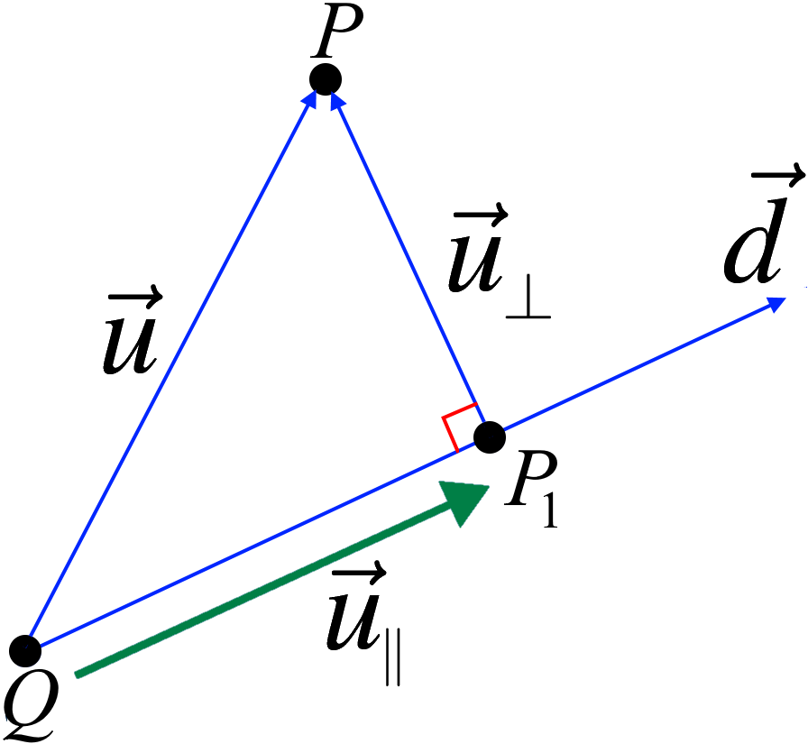

Projections¶
{kind=link}
If a nonzero vector \(\vec{d}\) is specified, the key idea of projection is to be able to write an arbitrary vector \(u\) as a sum of two vectors,
where \(\vec{u}_{\parallel}\) is a parallel to \(\vec{d}\) , and \(\vec{u}_{\perp}=\vec{u}-\vec{u}_{\parallel}\) is perpendicular to \(\vec{d}\).
Suppose that \(\vec{u}\) and \(\vec{d}\neq 0\) emanate from a common tail \(Q\). Let \(P\) be the tip of \(\vec{u}\), and let \(P_1\) denote the foot of the perpendicular from \(P\) to the line through \(Q\) parallel to \(\vec{d}\).
Let \(\vec{u}\) and \(\vec{d}\) be nonzero vectors. Then there exist unique vectors \(\vec{u}_{\parallel}\) and \(\vec{u}_{\perp}\) such that \[\vec{u}=\vec{u}_{\parallel}+\vec{u}_{\perp}.\] where \(\vec{u}_{\parallel}\) is a scalar multiple of \(\vec{d}\) , and \(\vec{u}_{\perp}\) is perpendicular to \(\vec{d}\).
Vector Projection: Let \(\vec{u}\) and \(\vec{d}\) be vectors. Then, the projection of \(\vec{u}\) onto \(\vec{d}\) is given by
\(\vec{u}_{\parallel}=\overrightarrow{OP_1}\).
\(\vec{u}_{\parallel}\) is parallel to \(\vec{d}\).
\(\vec{u}_{\perp}= u - \vec{u}_{\parallel}\) is orthogonal to \(\vec{d}\). In other words \[\vec{u}_{\perp}=\vec{u}-\frac{\vec{u}\bullet\vec{d}}{\|\vec{d}\|^2}\vec{d}.\]
\(\vec{u}=\vec{u}_{\parallel}+\vec{u}_{\perp}\).
Example: Let \(\vec{u}=\begin{bmatrix} 2 \\ 1 \end{bmatrix}\) and \(\vec{d}=\begin{bmatrix} 1 \\ 0 \end{bmatrix}\). Find vectors \(\vec{u}_{\parallel}\) and \(\vec{u}_{\perp}\) such that,
\(\vec{u}=\vec{u}_{\parallel}+\vec{u}_{\perp}\),
\(\vec{u}_{\parallel}\) is parallel to \(\vec{d}\),
\(\vec{u}_{\perp}\) is perpendicular to \(\vec{d}\).
Solution:
We also can verify that \(\vec{u}=\vec{u}_{\parallel}+\vec{u}_{\perp}\).
Check https://www.geogebra.org/classic/nqdjwxau for the graph.
Example: Consider \(P=(2,2,-1)\) and the line
Find point \(Q\) on \(L\) closest to \(P\).
Solution:

It can be seen that the direction of \(L\) is \(\vec{d}=\begin{bmatrix} 1 & -2 & 1 \end{bmatrix}^T\). Now, consider a point (any point!) on \(L\), for example, \(P_0=(1,1,1)\). To find \(Q\):
We need \(\overrightarrow{P_0P}\) and \(\overrightarrow{P_0Q}\):
\[\begin{align*} \overrightarrow{P_0P}&= \begin{bmatrix} 2\\ 2\\ -1 \end{bmatrix}-\begin{bmatrix} 1\\ 1\\ 1 \end{bmatrix}=\begin{bmatrix} 1\\ 1\\ -2\end{bmatrix} \\ \overrightarrow{P_0Q}&= \frac{\overrightarrow{P_0P}\bullet \vec{d}}{\vec{d}\bullet \vec{d}}\vec{d}= \frac{\begin{bmatrix} 1\\ 1\\ -2 \end{bmatrix}\bullet\begin{bmatrix} 1\\ -2\\ 1 \end{bmatrix}} {\begin{bmatrix} 1\\ -2\\ 1 \end{bmatrix}\bullet\begin{bmatrix} 1\\ -2\\ 1 \end{bmatrix}} \begin{bmatrix}1\\ -2\\ 1\end{bmatrix} =-\frac{1}{2}\begin{bmatrix}1\\ -2\\ 1\end{bmatrix} =\begin{bmatrix}-\frac{1}{2}\\ 1\\ -\frac{1}{2}\end{bmatrix}. \end{align*}\]\(Q\) is given by:
\[\begin{align*} \overrightarrow{0Q}&=\overrightarrow{0P_0}+ \overrightarrow{P_0Q} =\begin{bmatrix} 1\\ 1\\ 1\end{bmatrix}-\frac{1}{2}\begin{bmatrix}1\\ -2\\ 1\end{bmatrix} =\begin{bmatrix} \frac{1}{2}\\ 2\\ \frac{1}{2}\end{bmatrix}. \end{align*}\]
Hence, \(Q=\left(\dfrac{1}{2}, 2, \dfrac{1}{2}\right)\).
Refrences¶
Kuttler, Kenneth. “A First Course in Linear Algebra (Lyryx).” (2018).
Nicholson, W. Keith. “Linear Algebra with Applications (Lyryx).” (2018).